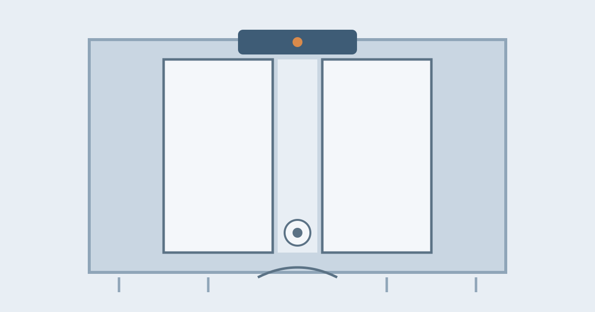

How Do Automatic Doors Work?

You walk toward the entrance of a supermarket, and before you even reach for a handle, the doors glide open by themselves. It feels polite, almost as if the building noticed you coming. In a sense, it did: above the door, a sensor is watching the space in front of it, and the moment it detects you, it tells a motor to open the door, then closes it again once you are safely through.
An automatic door is really three systems working together: a sensor that detects people, a motor and mechanism that moves the door, and a set of safety devices that make sure the door never closes on someone or opens at the wrong time. Each part is simple on its own, but together they make a machine that can open and close tens of thousands of times a year without anyone touching it.
The Sensors: How the Door Knows You Are There
The most common sensor above a sliding door is a motion detector, and it usually works with microwaves rather than visible light. The sensor constantly sends out invisible microwave signals and listens for their reflections. When you walk into its field, the reflections change, because a moving body disturbs the pattern, and the sensor sends an open signal to the controller. Microwave sensors are popular because they work in the dark, through glass, and in bad weather, and they can be tuned to ignore small movements like falling leaves.
Many doors add a second type of sensor: an infrared detector. Some infrared sensors work like a light beam: an invisible beam shines across the doorway, and when your body breaks it, the door opens. Others are passive, simply detecting the warmth of a person approaching. Pressure mats are an older method still found in some places: a mat in front of the door senses your weight when you step on it. Modern entrances often combine two methods, so the door opens reliably whether you approach quickly, slowly, or in a wheelchair.
The Motor and Mechanism: How the Door Actually Moves
Once the sensor sends its signal, a controller, essentially a small computer above the door, decides what to do. In a sliding door, the controller starts an electric motor, which turns a belt or chain connected to the door panels. The panels roll along an overhead track, gliding apart to open and back together to close. Sliding doors are the most common type because they need no swing space, which matters in a busy entrance where people and trolleys pass constantly.
Swinging automatic doors work differently: the motor drives an arm that pushes the door open, like an invisible hand, and a spring or the motor itself pulls it closed again. Revolving doors use a motor to rotate their panels at a steady, slow speed, and the motor stops or slows if something resists it. In every type, the controller also sets the timing: how long the door stays open after the last person passes, and how gently it closes, so it does not slam.
Safety First: The Sensors That Stop Accidents
The safety system is arguably more important than the opening system, because a heavy glass door closing on a person would be dangerous. That is why automatic doors have safety sensors in addition to the opening sensors. Light beams across the doorway detect anything in the door's path, a child, a shopping trolley, a walking stick, and hold the door open until the path is clear. Some doors also have sensors that watch the area the door swings or slides into, so the door will not move if someone is standing where it needs to go.
If something does get caught, the motor is designed to sense the resistance and stop or reverse, rather than force its way through. Most doors also have a manual backup: if the power fails, a spring or battery system moves the door to a safe position, and in an emergency the panels of a sliding door can usually be pushed open by hand. Doors in public buildings are inspected regularly, and the sensors are tested, because a failed safety sensor would turn a convenience into a hazard.
Why Doors Sometimes Open for Nobody
Almost everyone has seen an automatic door open when nobody is there, and it usually has a simple explanation. Microwave sensors can be triggered by movement nearby, such as a passing vehicle, heavy rain, or even a flag flapping in the wind, if the sensitivity is set too high. Sunlight and reflections can confuse infrared beams. Doors near a busy road or a draughty entrance are more prone to false triggers, which is why installers tune each sensor to its location, narrowing its field so it watches only the approach area.
The opposite problem, a door that does not open for you, is usually a sensor issue too. Standing still for a long time can confuse a motion sensor, because it is designed to detect movement, which is why presence sensors, which detect a person standing in the doorway even when still, are now fitted alongside motion sensors. Dirt on a sensor lens, a mat worn out by years of footsteps, or a power interruption can also stop a door from responding, and in that case the manual push or a staff override gets people through until it is repaired.
Saving Energy and Keeping Buildings Comfortable
Automatic doors do more than save effort. Because they open only when needed and close promptly, they let far less heated or cooled air escape than a door left propped open, which is why shops and offices use them even where nobody has mobility needs. Revolving doors are especially good at this, because one section is always closed, so wind and weather stay outside. In hospitals and clean environments, automatic doors also reduce the number of surfaces people touch, which helps with hygiene.
There is a trade-off, though. The motor, sensors, and controller use electricity around the clock, and a poorly tuned door that opens for every passer-by wastes more energy than it saves. Good installation matters: the right sensor field, the right hold-open time, and regular maintenance are what turn an automatic door from a novelty into a genuinely efficient entrance.
Common Misconceptions
One common belief is that the door sees you with a camera. Most doors do not use cameras at all: they use microwaves, infrared, or pressure, none of which records an image. Another is that the door is magic or voice-activated: it is simply responding to movement or presence in its sensor field. A third is that automatic doors are only for disabled access. They do help people in wheelchairs or carrying heavy bags, but they are fitted in most buildings for convenience, hygiene, and energy saving, which benefit everyone.
Frequently Asked Questions
What happens to an automatic door in a power cut?
Most public automatic doors are designed to fail safe: a battery backup or spring moves them to an open or manually pushable position, so nobody is trapped. Fire exits have additional rules that require them to open freely in an emergency.
Can an automatic door close on a child?
It should not. Safety beams across the doorway detect anything in the path and hold the door open, and the motor reverses if it meets resistance. This is why regular sensor testing matters so much.
Why does the door open when I am just walking past, not going in?
The sensor's field may extend a little beyond the doorway, or it may be set too sensitively. It is detecting your movement nearby, even though you are not entering.
Conclusion
An automatic door is a quiet piece of teamwork. A sensor notices you coming, a controller decides the moment, a motor glides the panels aside, and a separate set of safety sensors makes sure nobody is in the way. When it opens for nobody, or hesitates when you approach, that is usually a sensor doing its job a little too eagerly, or a little too cautiously. The next time a door opens before you reach it, you are not being watched by magic: you are being detected by microwaves and infrared light, and welcomed in by a motor that never gets tired.